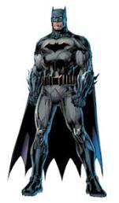

The Batmobile is the fictional car driven by the superhero Batman. Housed in the Batcave, which it accesses through a hidden entrance, the Batmobile is both a heavily armored tactical assault vehicle and a personalized custom-built pursuit and capture vehicle that is used by Batman in his fight against crime.

costume is used to conceal his identity, protect himself, and frighten criminals. Most versions of the Batsuit incorporate some form of body armor, powered exoskeleton, "wingsuit"-cape, built-in augmented reality computer, night-vision, gas filters, and other aids for protection or effectiveness in combat.
It is the headquarters of the superhero Batman, whose secret identity is Bruce Wayne, consisting of caves beneath his personal residence, Wayne Manor.